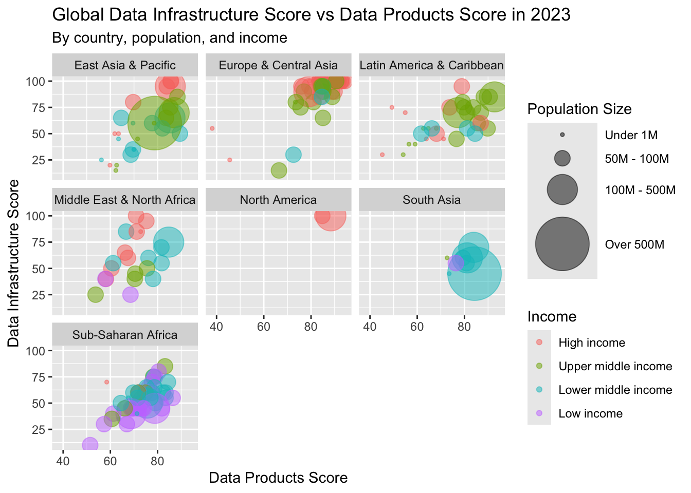

#Libraries
library(tidytuesdayR)
library(ggplot2)
library(tidyr)
library(dplyr)
library(plotly)
library(scales)
library(htmlwidgets)
library(here)
# Read in Tidy Tuesday data
spi <- readr::read_csv('https://raw.githubusercontent.com/rfordatascience/tidytuesday/main/data/2025/2025-11-25/spi_indicators.csv')Tidy Tuesday 4
Load libraries and data
Today we’re looking at data that monitors the statistical performance of countries as develped by the World Bank. The SPI Framework focuses on five key dimensions of a country’s statistical performance: (i) data use, (ii) data services, (iii) data products, (iv) data sources, and (v) data infrastructure.
Tidy up the data!
We’re going to take a look at the most recent data from 2023. We want to understand the relationship between the data products score and data infrastructure score.
spi_cleaned <- spi %>%
filter(year == "2023") %>% #most recent year
select(-year) %>% #remove year column from data
drop_na("data_products_score","data_infrastructure_score") %>% #drop NAs for data we're using
filter(income != "Not classified") %>% #filter for income not equal to not classified
mutate(income = factor(income, #factor for legend
levels = c("High income", "Upper middle income", "Lower middle income", "Low income")),
pop_group = cut(population, #factor for population, pop range huge &plotly legends can only handle discrete
breaks = c(0, 1000000, 100000000, 500000000, 1428627663),
labels = c("Under 1M", "50M - 100M", "100M - 500M", "Over 500M")
))Our first time making a plot with bubble graphs
Let’s see how the data products and infrastructure scores change based on population size and income. Is there a clear relationship we can identify here?
plot <- ggplot(spi_cleaned,
aes(x = data_products_score, y = data_infrastructure_score,
size = pop_group, color = income,
text = paste("Country:", country, #text for interactive plotly
"<br>Data Products Score:", data_products_score,
"<br>Data Infrastructure Score:", data_infrastructure_score,
"<br>Population:", pop_group))) +
geom_point(alpha = 0.5) + #modify color transparency
scale_size_manual(
name = "Population Size",
values = c(1,5, 10,18)) +
scale_color_discrete(name = "Income") + #legend title
labs(x = "Data Products Score",
y = "Data Infrastructure Score",
title = "Global Data Infrastructure Score vs Data Products Score in 2023",
subtitle = "By country, population, and income") +
facet_wrap(~region)
plot 
ggsave(here("Tidy_Tuesday","2025-11-25","Output","GlobalDataScores.png"))Make the plot interactive with a new package!
It would be great to see the specific countries we’re taking a look at and their specific data scores.
GlobalData <- ggplotly(plot,
tooltip = c("text")) #for the popup text
GlobalDatasaveWidget(GlobalData, here("Tidy_Tuesday","2025-11-25", "Output", "GlobalDataPlotly.html"))What we learned today
This was the first time that I used a bubble plot and plotly. I converted my data to factors for population and income levels for better data visualization given the huge range in population size and categorical nature of income levels. For a bubble plot, the transparent color was necessary since countries with larger populations covered the data of countries with smaller populations. I have the two different plots shown here because plotly legends are very finicky - I had to convert population to factors, otherwise it did not appear in the legend. The plotly legend is messy and the legend can’t divide population size and income the way a ggplot legend can.